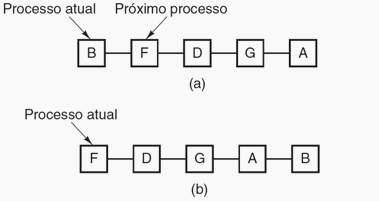

Um dos algoritmos mais antigos, simples, justos e amplamente usados é o circular. A cada processo é atribuído um intervalo de tempo, o seu quantum, no qual ele é permitido executar.
Se, ao final do quantum, o processo ainda estiver executando, a CPU sofrerá preempção e será dada a outro processo. Se o processo foi bloqueado ou terminou antes que o quantum tenha decorrido, a CPU é chaveada para outro processo, e ele é colocado no pool de bloqueados.
O escalonamento circular é fácil de implementar. O escalonador só precisa manter uma lista de processos executáveis (fila de prontos). Quando o processo usa todo o seu quantum, ele é colocado no final da lista.
O que interessa para o escalonamento circular é o tamanho do quantum. O chaveamento de um processo para outro requer uma certa quantidade de tempo para a sua administração - salvar e carregar registradores e mapas de memória, atualizar várias listas e tabelas, carregar e descarregar a memória cache, etc.